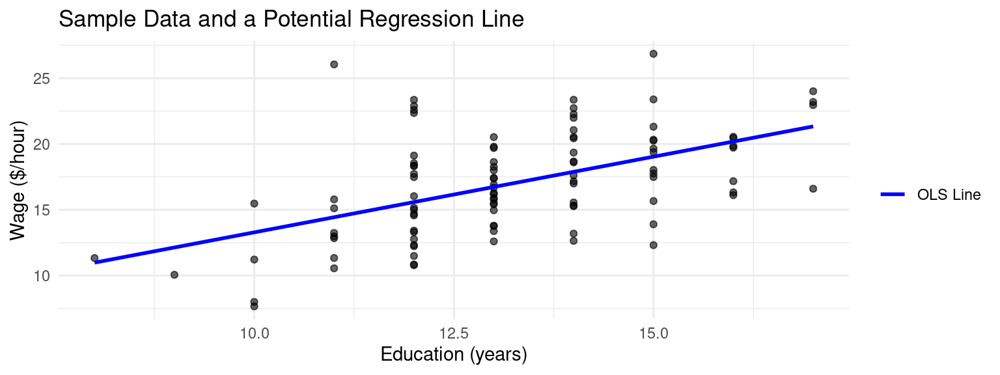
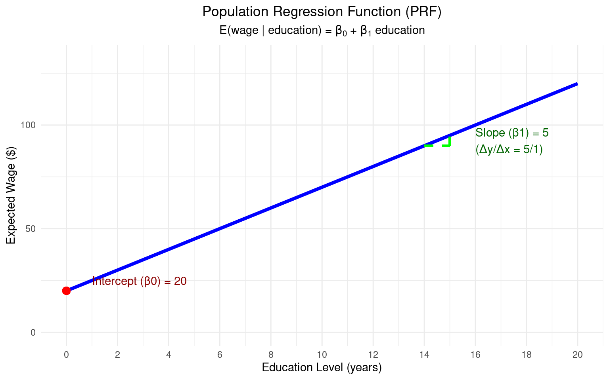
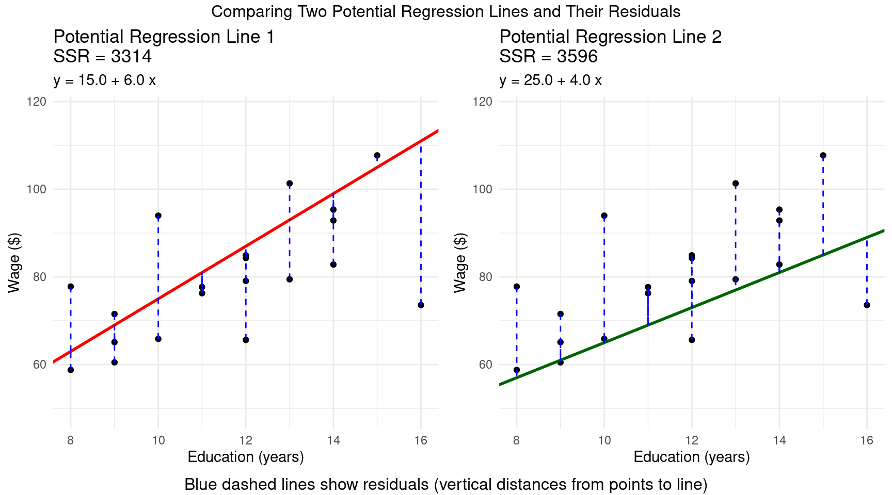
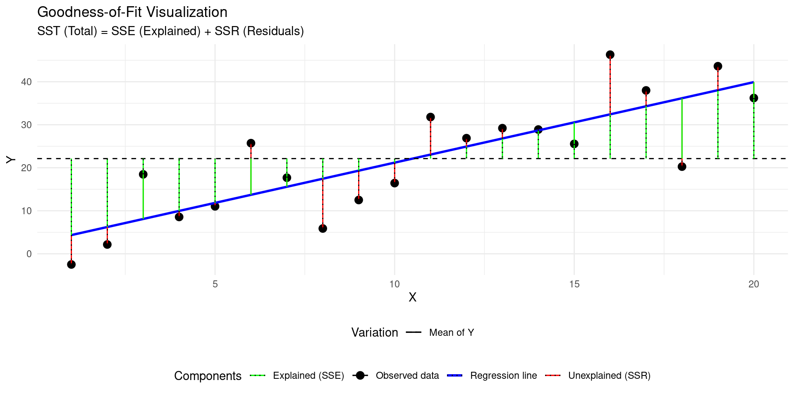
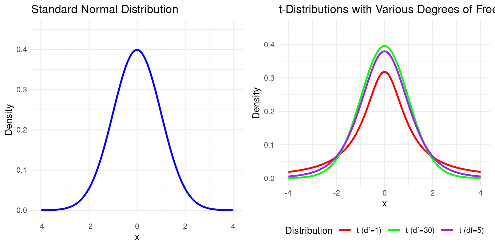
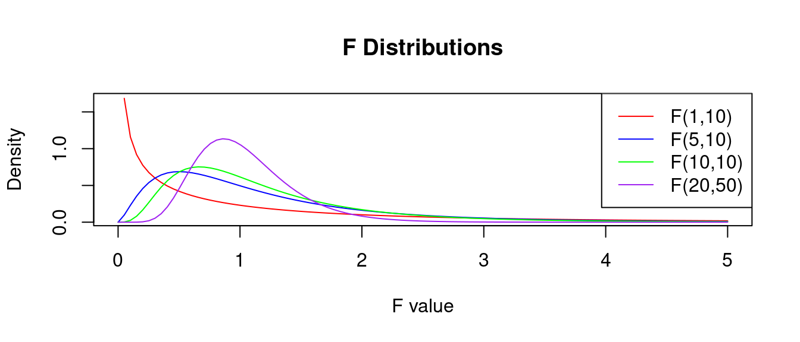

Empirical Economics
Lecture 3: The Linear Model
Outline
Course Overview
- Statistics and Probability - Basic Concepts
- Statistics and Probability - Hypothesis Testing
- The Linear Regression Model
- Time Series Data
- Panel Data (FE) and Control Variables
- Binary Outcome Data
- Potential Outcomes and Difference-in-differences
- Hands-on Econometrics in Practice
What do we do today?
First two/three lectures devoted to Probability & Statistics
Lecture 1:
- How do we model the processes that might have generated our data?
- Probability
Lecture 2:
- How do we summarize and describe data, and try to uncover what process may have generated it?
- Statistics
This lecture and rest of the course:
- How do we uncover patterns between variables?
- Econometrics
What is Econometrics?
What is Econometrics?
Econometrics is the use of statistical methods to:
- Estimate economic relationships.
- Test economic theories.
- Evaluate and implement government and business policy.
- Forecast economic variables.
It’s where economic theory meets real-world data.
Theory proposes relationships (e.g., Law of Demand), but econometrics tells us the magnitude and statistical significance of these relationships.
Why study econometrics?
It allows you to quantify the relationships that you learn about in your other economics courses.
- By how much does demand fall if we raise the price by 10%?
- What is the effect of an additional year of education on future wages?
- It helps distinguish between correlation and causation.
- It is an essential tool for empirical research in economics and finance, and a highly valued skill in the job market.
The Nature of Economic Data
- The type of data we have determines the econometric methods we should use.
- Cross-Sectional Data: A snapshot of many different individuals, households, firms, countries, etc., at a single point in time.
- Time Series Data: Observations on a single entity (e.g., a country, a company) collected over multiple time periods.
- Pooled Cross-Sections: A combination of two or more cross-sectional datasets from different time periods. The individuals are different in each period.
- Panel (or Longitudinal) Data: The same cross-sectional units are followed over time.
Examples of Economic Data
Examples of Economic Data
Cross-sectional data: A survey of 500 individuals in 2023, with data on their wage, education, gender, and age.
Time-series data: Data on Dutch GDP, inflation, and unemployment from 1950 to 2023.
Pooled cross-sections: A random survey of households in 1990, and another different random survey of households in 2020.
Panel data: Tracking the wage, education, and city of residence for the same 500 individuals every year from 2010 to 2020.
The Concept of a Model
The Population Regression Function (PRF)
- In econometrics, we are interested in relationships between variables.
- Let’s say we are interested in the relationship between wages (\(y\)) and years of education (\(x\)). Economic theory suggests a positive relationship.
- We can model the average wage for a given level of education. This is the Population Regression Function (PRF):
\[ E(y | x) = \beta_0 + \beta_1 x. \]
- Where:
- \(E(y | x)\) is the expected value (average) of y, given a value of x.
- \(\beta_0\) is the population intercept.
- \(\beta_1\) is the population slope. These are unknown constants (parameters) that we want to estimate.
- The PRF represents the true, but unknown, relationship in the population.
Example: Visualization of PRF
The Stochastic Error Term
Of course, not everyone with the same level of education has the same wage. Other factors matter (experience, innate ability, location, luck, etc.).
We capture all these other unobserved factors in a stochastic error term, \(u\).
Our individual-level population model is:
\[ y_i = \beta_0 + \beta_1 x_i + u_i \]
- Where:
- \(y_i\) is the wage of individual \(i\).
- \(x_i\) is the education of individual \(i\).
- \(u_i\) is the error term for individual \(i\). It represents the deviation of individual \(i\)’s actual wage from the population average, \(E(y|x_i)\).
- By definition of the conditional expectation, \(E(u|x) = 0\). The average of the unobserved factors does not depend on the level of education.
From Population to Sample
We can’t observe the entire population. We only have a sample of data.
Our goal is to use the sample data to estimate the unknown population parameters \(\beta_0\) and \(\beta_1\).
The Sample Regression Function (SRF) is our estimate of the PRF:
\[ \hat{y} = \hat{\beta}_0 + \hat{\beta}_1 x \]
- Where:
- \(\hat{y}\) (y-hat) is the predicted or fitted value of y.
- \(\hat{\beta}_0\) and \(\hat{\beta}_1\) are the estimators of \(\beta_0\) and \(\beta_1\). They are statistics calculated from our sample data.
Example Regression in a Sample
Example: Sample Data and Regression
Derivation of the OLS Estimator
Residuals
- How do we choose the “best” values for \(\hat{\beta}_0\) and \(\hat{\beta}_1\)? We want a line that fits the data as closely as possible.
Definition: Residual
We define the residual, \(e_i\), as the difference between the actual value \(y_i\) and the fitted value \(\hat{y}_i\): \[ e_i = y_i - \hat{y}_i = y_i - (\hat{\beta}_0 + \hat{\beta}_1 x_i) \]
OLS Method
- The Ordinary Least Squares (OLS) method chooses \(\hat{\beta}_0\) and \(\hat{\beta}_1\) to minimize the Sum of Squared Residuals (SSR):
Definition: OLS Optimzation Problem
\[ \min_{\hat{\beta}_0, \hat{\beta}_1} SSR = \sum_{i=1}^{n} e_i^2 = \sum_{i=1}^{n} (y_i - \hat{\beta}_0 - \hat{\beta}_1 x_i)^2 \]
- We square the residuals so that positive and negative errors don’t cancel out, and because it penalizes larger errors more heavily.
Example: Residuals
Derivation of OLS
- To minimize the SSR, we use calculus: take the partial derivatives with respect to \(\hat{\beta}_0\) and \(\hat{\beta}_1\) and set them to zero.
- These are the First Order Conditions (FOCs).
OLS First Order Conditions
- \(\frac{\partial SSR}{\partial \hat{\beta}_0} = -2 \sum_{i=1}^{n} (y_i - \hat{\beta}_0 - \hat{\beta}_1 x_i) = 0 \implies \sum (y_i - \hat{\beta}_0 - \hat{\beta}_1 x_i) = 0\)
- \(\frac{\partial SSR}{\partial \hat{\beta}_1} = -2 \sum_{i=1}^{n} x_i (y_i - \hat{\beta}_0 - \hat{\beta}_1 x_i) = 0 \implies \sum x_i(y_i - \hat{\beta}_0 - \hat{\beta}_1 x_i) = 0\)
OLS Solution
- Solving this system of two equations for the two unknowns (\(\hat{\beta}_0\), \(\hat{\beta}_1\)) gives the OLS estimator formulas:
Theorem: OLS Estimates for \(\beta_0\) and \(\beta_1\)
\[ \hat{\beta}_1 = \frac{\sum_{i=1}^{n} (x_i - \bar{x})(y_i - \bar{y})}{\sum_{i=1}^{n} (x_i - \bar{x})^2} = \frac{\text{Sample Covariance}(x,y)}{\text{Sample Variance}(x)} \]
\[ \hat{\beta}_0 = \bar{y} - \hat{\beta}_1 \bar{x} \]
where \(\bar{x}\) and \(\bar{y}\) are the sample means of \(x\) and \(y\).
Algebraic Properties of OLS
The OLS estimators have some important algebraic properties that come directly from the FOCs:
The sum of the OLS residuals is zero:
- This implies that the sample average of the residuals, \(\bar{e}\), is also zero.
\[\sum_{i=1}^{n} e_i = 0\]
Algebraic Properties of OLS (Cont.)
- The sample covariance between the regressor (\(x\)) and the OLS residuals (\(e\)) is zero:
- This means the part of \(y\) that we can’t explain with \(x\) (the residual) is uncorrelated with \(x\) in our sample.
\[\sum_{i=1}^{n} x_i e_i = 0\]
- The point \((\bar{x}, \bar{y})\) is always on the OLS regression line.
- From the formula \(\hat{\beta}_0 = \bar{y} - \hat{\beta}_1 \bar{x}\), we can write \(\bar{y} = \hat{\beta}_0 + \hat{\beta}_1 \bar{x}\).
Interpreting OLS Coefficients
- Let’s run our wage-education regression: \(\text{Wage}_i = \hat{\beta}_0 + \hat{\beta}_1 \text{Educ}_i\)
Code
slr_model <- lm(wage ~ educ, data = dat)
# The coefficients are:
summary(slr_model)
##
## Call:
## lm(formula = wage ~ educ, data = dat)
##
## Residuals:
## Min 1Q Median 3Q Max
## -6.7201 -2.3878 -0.3926 1.9554 11.6092
##
## Coefficients:
## Estimate Std. Error t value Pr(>|t|)
## (Intercept) 1.7863 2.5164 0.710 0.479
## educ 1.1498 0.1887 6.092 2.19e-08 ***
## ---
## Signif. codes: 0 '***' 0.001 '**' 0.01 '*' 0.05 '.' 0.1 ' ' 1
##
## Residual standard error: 3.4 on 98 degrees of freedom
## Multiple R-squared: 0.2747, Adjusted R-squared: 0.2673
## F-statistic: 37.11 on 1 and 98 DF, p-value: 2.192e-08Code
import statsmodels.api as sm
X = r.dat.educ
y = r.dat.wage
X = sm.add_constant(X)
model = sm.OLS(y, X).fit()
print(model.summary())
## OLS Regression Results
## ==============================================================================
## Dep. Variable: wage R-squared: 0.275
## Model: OLS Adj. R-squared: 0.267
## Method: Least Squares F-statistic: 37.11
## Date: Sun, 03 Aug 2025 Prob (F-statistic): 2.19e-08
## Time: 13:18:05 Log-Likelihood: -263.27
## No. Observations: 100 AIC: 530.5
## Df Residuals: 98 BIC: 535.8
## Df Model: 1
## Covariance Type: nonrobust
## ==============================================================================
## coef std err t P>|t| [0.025 0.975]
## ------------------------------------------------------------------------------
## const 1.7863 2.516 0.710 0.479 -3.207 6.780
## educ 1.1498 0.189 6.092 0.000 0.775 1.524
## ==============================================================================
## Omnibus: 8.366 Durbin-Watson: 2.235
## Prob(Omnibus): 0.015 Jarque-Bera (JB): 8.006
## Skew: 0.626 Prob(JB): 0.0183
## Kurtosis: 3.595 Cond. No. 99.2
## ==============================================================================
##
## Notes:
## [1] Standard Errors assume that the covariance matrix of the errors is correctly specified.- So our estimated SRF is: \(\widehat{wage} = 1.79 + 1.15 \times educ\)
Interpretation
- Slope (\(\hat{\beta}_1 \approx 1.15\)): “For each additional year of education, we estimate the hourly wage to increase by $1.15, on average.” This is the key policy parameter.
- Intercept (\(\hat{\beta}_0 \approx 1.79\)): “For an individual with zero years of education, we predict an hourly wage of $1.79.”
Units and Functional Form
The values of the coefficients depend on the units of measurement of \(y\) and \(x\). We’ve used a level-level model (\(y\) and \(x\) are in their natural units).
Suppose we measured wage in cents instead of dollars.
- The new dependent variable is \(wage_{cents} = 100 \times wage\).
- The new regression would be: \(\widehat{wage_{cents}} = (100 \times \hat{\beta}_0) + (100 \times \hat{\beta}_1) \times educ\)
- Both the intercept and slope would be 100 times larger. The interpretation is the same, just the units change (“an extra year of education increases wage by 125 cents”).
Units and Functional Form (Cont.)
- What if we measured education in months instead of years?
- The interpretation of \(\hat{\beta}_1\) would become “the estimated change in wage for an additional month of education.” The coefficient value would be \(\frac{1}{12}\) of its original value:
Example: Education in Months
From our definition, \(educ_{years} = \frac{1}{12} educ_{months}\). Let’s substitute this into the original estimated equation:
\[\begin{align*} \widehat{wage} &= \hat{\beta}_0 + \hat{\beta}_1 educ_{years} \\ &= \hat{\beta}_0 + \hat{\beta}_1 \left( \frac{1}{12} educ_{months} \right) \\ &= \hat{\beta}_0 + \left( \frac{\hat{\beta}_1}{12} \right) educ_{months} \end{align*}\]
Why use different functional forms?
- So far, we’ve assumed a linear relationship: a one-unit change in \(x\) leads to the same change in \(y\), regardless of the starting value of \(x\).
- But often, relationships are not linear. We use transformations (like logarithms) to:
- Model Non-Linear Relationships: Capture effects that are proportional or diminishing.
- Change the Interpretation: Analyze percentage changes (elasticities) instead of unit changes.
- Improve Statistical Properties: Stabilize the variance of the error term or make the distribution of a variable more symmetric.
- The most common transformations involve the natural logarithm, \(\log()\).
The Log-Level Model: \(\log(y)\) on \(x\)
Here, we transform the dependent variable \(y\): \(\log(y) = \beta_0 + \beta_1 x + u\)
Interpretation of \(\beta_1\): A one-unit increase in \(x\) is associated with a \((100 \times \beta_1)\%\) change in \(y\).
Interpretation of \(\beta\) in the Log-Level Model
To see this, take the derivative of the equation with respect to \(x\): \[ \frac{d(\log(y))}{dx} = \beta_1 \]
Recall the calculus rule/approximation: for small changes, \(\Delta \log(y) \approx \frac{\Delta y}{y}\).
For a one-unit change in \(x\) (\(\Delta x = 1\)): \[ \beta_1 = \frac{\Delta \log(y)}{\Delta x} \approx \frac{\Delta y / y}{1} \]
Example Log-Level
Example: Log-Level Interpretation
In a log-level model, \(\beta_1\) is the proportional change in \(y\).
We multiply by 100 to get a percentage.
If \(\widehat{\log(wage)} = 1.5 + 0.08 \times educ\), an additional year of education is associated with an approximate \(0.08 \times 100 = 8\%\) increase in wage.
The Level-Log Model: \(y\) on \(\log(x)\)
Here, we transform the independent variable \(x\): \(y = \beta_0 + \beta_1 \log(x) + u\)
Interpretation of \(\beta_1\): A 1% increase in \(x\) is associated with a \((\beta_1 / 100)\) unit change in \(y\).
Interpretation of \(\beta\) in Level-Log Model
To see this, take the derivative of the equation with respect to \(\log(x)\): \[ \frac{dy}{d(\log(x))} = \beta_1 \]
A change in \(\log(x)\) is approximately the proportional change in \(x\): \(\Delta \log(x) \approx \frac{\Delta x}{x}\).
- So, \(\Delta y \approx \beta_1 \Delta(\log(x)) \approx \beta_1 \frac{\Delta x}{x}\).
- If we consider a 1% change in \(x\), then \(\frac{\Delta x}{x} = 0.01\).
- The resulting change in \(y\) is: \(\Delta y \approx \beta_1 \times (0.01) = \frac{\beta_1}{100}\).
Example Level-Log Model
Example: Level-Log Model
Suppose that \(\text{price} = 200 + 75 \times \log(\text{sqft})\) is an estimated regression model for house prices.
Then, A 1% increase in square footage is associated with a \(75/100 = \$0.75\) increase in price.
The Log-Log Model: \(\log(y)\) on \(\log(x)\)
- This model is very common in economics because \(\beta_1\) is an elasticity: \(\log(y) = \beta_0 + \beta_1 \log(x) + u\)
Interpretation of \(\beta\) in the Log-Log Model
A 1% increase in \(x\) is associated with a \(\beta_1\%\) change in \(y\). To see this, from the model, we can write: \[ \beta_1 = \frac{d(\log(y))}{d(\log(x))} \]
Using the same approximations as before: \[ \beta_1 \approx \frac{\Delta y / y}{\Delta x / x} = \frac{\%\Delta y}{\%\Delta x} \]
This is the definition of elasticity. If we set the percentage change in \(x\) to 1% (\(\%\Delta x=1\)), then the percentage change in \(y\) is just \(\beta_1\).
Example: Elasticity
Example: Interpretation of \(\beta_1\) in the Log-Log Model
Suppose we have estimated \(\log(\text{sales}) = 4.8 - 1.2 \times \log(\text{price})\) for a product. Then, a 1% increase in price is associated with a 1.2% decrease in sales. The price elasticity of demand is -1.2.
Other Forms: Polynomials
- We can also add polynomial terms (like \(x^2\), \(x^3\), etc.) to capture more complex non-linear patterns, such as diminishing returns.
- Model (Quadratic): \(y = \beta_0 + \beta_1 x + \beta_2 x^2 + u\)
Interpretation of the Quadratic Model
The effect of a change in \(x\) on \(y\) now depends on the level of \(x\).
The marginal effect of \(x\) on \(y\) is the derivative with respect to \(x\): \[ \frac{\Delta y}{\Delta x} \approx \frac{dy}{dx} = \beta_1 + 2 \beta_2 x \]
A one-unit change in \(x\) is associated with a change in \(y\) of approximately \(\beta_1 + 2 \beta_2 x\).
Example Polynomial
Example: Polynomial Regression
Suppose we have estimated \(\widehat{wage} = 3.50 + 0.60 \times educ - 0.02 \times educ^2\).
The effect of the first year of education (\(x=0 \to x=1\)) is about \(\$0.60\).
The effect of the 13th year of education (\(x=12 \to x=13\)) is: \(0.60 + 2(-0.02)(12) = 0.60 - 0.48 = \$0.12\).
This captures the diminishing returns to education on wage.
Summary of Interpretations
| Model Name | Equation | Interpretation of \(\hat{\beta}_1\) |
|---|---|---|
| Level-Level | \(y = \beta_0 + \beta_1 x\) | A 1-unit change in \(x\) leads to a \(\hat{\beta}_1\) unit change in \(y\). |
| Log-Level | \(\log(y) = \beta_0 + \beta_1 x\) | A 1-unit change in \(x\) leads to a \((100 \times \hat{\beta}_1)\%\) change in \(y\). |
| Level-Log | \(y = \beta_0 + \beta_1 \log(x)\) | A 1% change in \(x\) leads to a \((\hat{\beta}_1/100)\) unit change in \(y\). |
| Log-Log | \(\log(y) = \beta_0 + \beta_1 \log(x)\) | A 1% change in \(x\) leads to a \(\hat{\beta}_1\%\) change in \(y\). |
Goodness-of-Fit
How well does our estimated line explain the variation in our dependent variable, \(y\)?
We can partition the total variation in \(y\) into two parts: the part explained by the model, and the part that is not explained.
Partition of Variation in \(Y\)
SST (Total Sum of Squares): Total variation in \(y\). \(SST = \sum (y_i - \bar{y})^2\)
SSE (Explained Sum of Squares): Variation explained by the regression. \(SSE = \sum (\hat{y}_i - \bar{y})^2\)
SSR (Sum of Squared Residuals): Unexplained variation. \(SSR = \sum e_i^2\)
It is a mathematical property that SST = SSE + SSR.
Goodness-of-Fit Visualization
Goodness-of-Fit: \(R^2\)
- We want to encapsulate “goodness-of-fit” into one number.
Definition: \(R^2\)
The R-squared measures the proportion of the total sample variation in \(y\) that is “explained” by the regression model.
\[ R^2 = \frac{SSE}{SST} = 1 - \frac{SSR}{SST} \]
- \(R^2\) is always between 0 and 1.
- A higher \(R^2\) means the model fits the data better in-sample.
- Caution: A high \(R^2\) is not the ultimate goal of econometrics! We care more about getting an unbiased estimate of the causal effect \(\beta_1\).
OLS Classical Assumptions
The Classical Assumptions
- The objective of a regression is to say something about the population parameters \(\beta\). However, we only have a sample equivalent, \(\hat{\beta}\) at our disposal.
- This estimate goes paired with some uncertainty.
- For our OLS estimates to have desirable statistical properties, certain assumptions must hold. These are the Gauss-Markov Assumptions.
Gauss-Markov Assumptions
- Assumption 1: Linearity in Parameters. The population model is \(y = \beta_0 + \beta_1 x + u\).
- Assumption 2: Random Sampling. The data \((x_i, y_i)\) are a random sample from the population described by the model.
- Assumption 3: Sample Variation in \(x\). The values of \(x_i\) in the sample are not all the same. This is the no perfect collinearity assumption. If all \(x_i\) are the same, the denominator of \(\hat{\beta}_1\) is zero!
- Assumption 4: Zero Conditional Mean. \(E(u|x) = 0\). The average value of the unobserved factors is unrelated to the value of \(x\).
- Assumption 5: Homoskedasticity. \(Var(u|x) = \sigma^2\). The variance of the error term is constant for all values of \(x\).
The Crucial Assumption: Zero Conditional Mean
- Assumption 4, \(E(u|x) = 0\), is the most important assumption for establishing causality.
- It means that the explanatory variable (\(x\)) must not be correlated with any of the unobserved factors (\(u\)) that affect the dependent variable (\(y\)).
Example: Zero Conditional Mean Assumption
Let \(y = wage\), \(x = educ\), \(u\) = unobserved factors like innate ability, family background, motivation.
Is it likely that \(E(u|educ)=0\)? Probably not. Innate ability (\(u\)) is likely correlated with education (\(x\)). People with higher ability may find it easier to get more education.
If \(Cov(educ, ability) > 0\), then our OLS estimate \(\hat{\beta}_1\) will be biased upwards. It will capture the effect of education and the effect of ability. This is Omitted Variable Bias.
Unbiasedness of OLS
Theorem: Unbiasedness of OLS
Under assumptions SLR.1 through SLR.4, the OLS estimators are unbiased.
\[ E(\hat{\beta}_0) = \beta_0 \quad \text{and} \quad E(\hat{\beta}_1) = \beta_1 \]
- What does this mean?
- Unbiasedness is a property of the procedure of OLS estimation.
- If we could draw many, many random samples from the population and calculate \(\hat{\beta}_1\) for each sample, the average of all these estimates would be equal to the true population parameter, \(\beta_1\).
- Our estimate from any single sample might be higher or lower than the true value, but on average, we get it right.
- This property relies critically on the Zero Conditional Mean assumption (SLR.4). If SLR.4 fails, OLS is biased.
- Unbiasedness is a property of the procedure of OLS estimation.
Variance of OLS Estimators
- We also want our estimators to be precise, meaning they don’t vary too much from sample to sample. This is measured by their sampling variance.
Theorem: Variance of the OLS Estimator
Under assumptions SLR.1 through SLR.5 (all five Gauss-Markov assumptions), the variance of the OLS slope estimator is:
\[ Var(\hat{\beta}_1) = \frac{\sigma^2}{\sum_{i=1}^n (x_i - \bar{x})^2} = \frac{\sigma^2}{SST_x} \]
Consult the appendix for a derivation.
Variance of OLS Estimators (Cont.)
- Let’s forget regression for a second.
- How much does a simple sample mean (\(\bar{x}\)) wobble?
- Its variance is famously simple: \(Var(\bar{x}) = \frac{\sigma^2}{n}\)
- This formula is driven by two intuitive ideas:
- \(\sigma^2\) is the variance of the underlying population. It’s the inherent “noisiness” or “spread” of the data points themselves.
- \(n\) is your sample size. It’s how much data you have to “anchor” your estimate.
- Looking at \(Var(\hat{\beta}_1) = \frac{\sigma^2}{\sum_{i=1}^n (x_i - \bar{x})^2} = \frac{\sigma^2}{SST_x}\) tells us the exact same..
Determinants of the Variance
- What determines the precision of our estimate?
- The error variance, \(\sigma^2\): More “noise” in the relationship (larger \(\sigma^2\)) leads to a larger variance for \(\hat{\beta}_1\).
- The total sample variation in x, \(SST_x\): More variation in our explanatory variable (\(x\)) leads to a smaller variance for \(\hat{\beta}_1\). We learn more about the slope when our \(x\) values are more spread out.
- The sample size, n: A larger sample size generally increases \(SST_x\), which decreases the variance of \(\hat{\beta}_1\).
Determining the Variance in Practice
- There’s a catch. We need \(\sigma^2\) (the true variance of the errors) for our formula.
- But we can never know the true errors, because we don’t know the true line!
- All we have are the residuals (\(e_i\)) from our estimated line: \(e_i = y_i - \hat{y}_i\)
- Solution: We use the residuals to estimate the error variance. We call this estimate \(s^2\) or \(\hat{\sigma^2}\), and its square root is called the standard error of a regression coefficient.
The Standard Error
- The SER is an estimator of the standard deviation of the population error term, \(\sigma\). It measures the typical size of a residual (the model’s “average mistake”).
Definition: Standard Error of a Regression
\[ \hat{\sigma} = SER = \sqrt{\frac{SSR}{n-2}} = \sqrt{\frac{\sum e_i^2}{n-2}} \]
- We divide by \(n-2\) (degrees of freedom) because we had to estimate two parameters (\(\beta_0, \beta_1\)) to get the residuals.
- SER is measured in the same units as \(y\). A smaller SER is better.
From Standard Error to Inference
- Now we have all the pieces:
- Start with the true (but unusable) variance formula \(Var(\hat{\beta}_1) = \frac{\sigma^2}{\sum_{i=1}^n (x_i - \bar{x})^2}\)
- Plug in our estimate \(s^2\) for the unknown \(\sigma^2\)
- This gives us the estimated variance: \(s^2 / \sum (X_i - \bar{X})^2\)
- Take the square root to get it back to the original units of β₁:
- This is the Standard Error of the Coefficient.
Definition: Standard Error of a Coefficient
\[ SE(\hat{\beta}) = \hat{\sigma} / \sqrt{\sum_{i=1}^n (X_i - \bar{X})^2} \]
Hypotheses Testing
To test a hypothesis about a single coefficient (e.g., \(H_0: \beta = 0\)), we want to see how many standard deviations our estimate \(\hat{\beta}\) is from the hypothesized value. \[ \text{Test Stat} = (\text{Our Estimate of } \hat{\beta} - \text{Hypothesized Value}) / \text{Standard Error}(\hat{\beta}) \]
If we knew the true \(\sigma\), this statistic would follow a perfect Normal distribution.
We don’t know the population error variance, \(\sigma^2\).
Solution: We replace \(\sigma^2\) with its sample estimate, \(\hat{\sigma}^2 = \frac{SSR}{n-k-1}\).
- Because we had to estimate \(\sigma^2\), we introduce extra sampling variability into our statistic.
- This means that our test statistic will be \(t\)-distributed instead of normally distributed.
Why a t-statistic?
- The ratio of our estimate to its standard error is no longer normally distributed. It follows a t-distribution.
Definition: Distribution of t-value under \(H_0\)
\[ t = \frac{\hat{\beta} - \beta}{se(\hat{\beta}_j)} \sim t_{n-2} \]
- The t-distribution looks very similar to the normal distribution but has “fatter tails,” reflecting the added uncertainty from estimating \(\sigma^2\).
- It is characterized by its degrees of freedom (df), which for Simple Linear Regression is \(df = n - 2\).
- As the sample size (\(n\)) gets large, the t-distribution converges to the standard normal distribution.
Visualization
Example: \(t\)-distribution vs. Normal Distribution

Example: A \(t\)-test in Simple Linear Regression
Example: \(t\)-test in Linear Regression
Consider the following regression output:
Code
summary(slr_model)
##
## Call:
## lm(formula = wage ~ educ, data = dat)
##
## Residuals:
## Min 1Q Median 3Q Max
## -6.7201 -2.3878 -0.3926 1.9554 11.6092
##
## Coefficients:
## Estimate Std. Error t value Pr(>|t|)
## (Intercept) 1.7863 2.5164 0.710 0.479
## educ 1.1498 0.1887 6.092 2.19e-08 ***
## ---
## Signif. codes: 0 '***' 0.001 '**' 0.01 '*' 0.05 '.' 0.1 ' ' 1
##
## Residual standard error: 3.4 on 98 degrees of freedom
## Multiple R-squared: 0.2747, Adjusted R-squared: 0.2673
## F-statistic: 37.11 on 1 and 98 DF, p-value: 2.192e-08From this, we can see that the regression standard error (SER), \(\hat{\sigma} = 3.4\). We can also see that the SE on the educ coefficient is 0.19. We can relate the two by dividing SER by \(\sqrt{\sum (X_i - \bar{X})^2}\):
We can therefore manually calculate the \(t\)-statistic testing \(H_0: \beta=0\) as:
Finally we can even calculate the two-sided \(p\)-value of observing a test statistic this extreme under the null hypothesis:
Multiple Regression
Introduction to Multiple Linear Regression
Simple Linear Regression is often inadequate because we can’t control for other factors that might be important. This leads to omitted variable bias.
The solution is to include those other factors in the model.
Definition: Multiple Linear Regression Model
\[ y = \beta_0 + \beta_1 x_1 + \beta_2 x_2 + ... + \beta_k x_k + u \]
Now we have \(k\) explanatory variables.
- \(\beta_j\) is the effect of a one-unit change in \(x_j\) on \(y\), holding all other explanatory variables (\(x_1, ..., x_{j-1}, x_{j+1}, ... x_k\)) constant.
- This is the concept of ceteris paribus (all else equal). MLR allows us to isolate the effect of one variable while mathematically controlling for the others.
OLS Estimation in MLR
The principle is the same: we choose \(\hat{\beta}_0, \hat{\beta}_1, ..., \hat{\beta}_k\) to minimize the Sum of Squared Residuals (SSR).
The formulas are complex (usually done with matrix algebra) but are easily handled by software:
lm(y ~ x1 + x2, data=df)in Rreg y x1 x2in Stata- Python:
from sklearn.linear_model import LinearRegression
LinearRegression().fit(X, y)Variance of OLS Estimators in MLR
Definition: Variance of the OLS Estimator (Multivariate)
\[ Var(\hat{\beta}_j) = \frac{\sigma^2}{SST_j (1 - R_j^2)} \]
- \(SST_j\) is the total variation in \(x_j\): \(\sum_{i=1}^N (x_{ij} - \bar{x}_j)^2\)
- \(R_j^2\) is the R-squared from a regression of \(x_j\) on all other explanatory variables in the model.
- The variance of a coefficient \(\hat{\beta}_j\) now depends on multicollinearity – how correlated \(x_j\) is with the other explanatory variables.
- If \(x_j\) is highly correlated with other \(x\)’s, \(R_j^2\) will be close to 1, making the denominator small and \(Var(\hat{\beta}_j)\) very large. This is imperfect multicollinearity.
- The no perfect collinearity assumption for MLR means that no \(x_j\) can be a perfect linear combination of the others (i.e., \(R_j^2 \neq 1\)).
Hypothesis Testing in Multiple Regression
- Once we’ve estimated our model, \(\widehat{y} = \hat{\beta}_0 + \hat{\beta}_1 x_1 + \dots + \hat{\beta}_k x_k\), we need to ask: Is the relationship we found statistically significant?
- Our estimates \(\hat{\beta}_0\) and \(\hat{\beta}_j\) are based on a sample of data. They are subject to sampling variability.
- It’s possible that the true relationship in the population is zero (\(\beta_1 = 0\)), and we just found a non-zero \(\hat{\beta}_1\) by random chance.
- In addition to the \(t\)-test, introduced with the Simple Linear Regression model, we also have the \(F\)-test:
- This tests the joint significance of multiple coefficients or the model as a whole.
The \(t\)-Test: Significance of a Single Coefficient
- The \(t\)-test is our tool for testing a hypothesis about a single coefficient.
- The most common hypothesis is that a variable has no effect on the dependent variable.
- Hypotheses for a single coefficient \(\beta_j\):
- Null Hypothesis (\(H_0\)): The variable has no effect. \(H_0: \beta_j = 0\)
- Alternative Hypothesis (\(H_A\)): The variable does have an effect. \(H_A: \beta_j \neq 0\)
- We calculate the t-statistic, which measures how many standard errors our estimated coefficient is away from the hypothesized value (zero).
The \(t\)-statistic (Multivariate)
\[ t = \frac{\text{Estimate} - \text{Hypothesized Value}}{\text{Standard Error}} = \frac{\hat{\beta}_j - 0}{se(\hat{\beta}_j)} \]
where the \(se(\hat{\beta}_j)\) is the square root of \(Var(\hat{\beta}_j)\) as presented earlier.
The F-Test: Testing Joint Significance
- The F-test is used to test hypotheses about multiple coefficients at the same time.
- Its most common use is to test the overall significance of the regression model.
F Test for Overall Significance
This tests whether any of our independent variables have an effect on the dependent variable.
Model: \(y = \beta_0 + \beta_1 x_1 + \beta_2 x_2 + \dots + \beta_k x_k + u\)
Null Hypothesis (\(H_0\)): None of the independent variables have an effect on \(y\). The model has no explanatory power. \(H_0: \beta_1 = \beta_2 = \dots = \beta_k = 0\)
Alternative Hypothesis (\(H_A\)): At least one of the coefficients is not zero. The model has some explanatory power. \(H_A: \text{At least one } \beta_j \neq 0 \text{ for } j=1, \dots, k\)
F-statistic
- In general, the F-test serves to compare a “restricted model”, where some of the \(\beta\) coefficients are zero under a null hypothesis, against an “unrestricted” model where coefficients are allowed to vary.
- A large F-statistic suggests that the unrestricted model explains significantly more variation in \(y\) than the restricted model.
- Like the t-test, we typically look at the p-value for the F-statistic. If \(p < 0.05\), we reject the null and conclude our model is jointly significant.
F-statistic Procedure
F Statistic: Definition (General)
The F statistic is defined as:
\[ F = \frac{(SSR_{\text{restricted}} - SSR_{\text{unrestricted}}) / (k_{\text{unrestricted}} - k_{\text{restricted}})}{SSR_{\text{unrestricted}} / (n - k_{\text{unrestricted}} - 1)} \]
- Where:
- \(SSR_{\text{restricted}}\) = Sum of Squared Residuals from the restricted model (fewer predictors)
- \(SSR_{\text{unrestricted}}\) = Sum of Squared Residuals from the unrestricted model (more predictors)
- \(k_{\text{restricted}}\) = Number of parameters in the restricted model (including intercept)
- \(k_{\text{unrestricted}}\) = Number of parameters in the unrestricted model (including intercept)
- \(n\) = Number of observations
- In addition, define:
- \(df_1 = k_{\text{unrestricted}} - k_{\text{restricted}}\)
(difference in the number of parameters) - \(df_2 = n - k_{\text{unrestricted}} - 1\)
(sample size minus number of unrestricted parameters minus 1)
- \(df_1 = k_{\text{unrestricted}} - k_{\text{restricted}}\)
F Distribution: Visualization
- The \(F\) distribution comes with two parameters, \(df_1\) and \(df_2\), as defined in the previous slide.
Example: F Distribution

Summary: \(t\)-test vs. \(F\)-test
- It’s crucial to understand when to use each test.
- A group of variables can be jointly significant (F-test) even if no single variable is individually significant (t-tests).
| Feature | t-test | F-test |
|---|---|---|
| Scope | One coefficient at a time | Two or more coefficients at a time |
| Typical Use | Is this specific variable significant? | Is this group of variables jointly significant? OR Is the model as a whole useful? |
| Null Hypothesis | \(H_0: \beta_j = 0\) | \(H_0: \beta_1 = \beta_2 = \dots = 0\) |
| Test Statistic | \(t = \frac{\hat{\beta}_j}{se(\hat{\beta}_j)}\) | Compares Restricted vs. Unrestricted sum of squares |
| Key Question | “Does education significantly affect wage, holding other factors constant?” | “Does a person’s work experience, measured by exper and exper^2, jointly affect their wage?” |
Understanding Statistical Output
Understanding Statistical Output
- By now, we can understand virtually all of the standard statistical output from R/Python/Stata.
- Let’s look at the full output from R/Python/Stata for our simple regression.
Call:
lm(formula = wage ~ educ + exper, data = dat_mlr)
Residuals:
Min 1Q Median 3Q Max
-7.3544 -1.9212 0.1218 2.1522 7.5290
Coefficients:
Estimate Std. Error t value Pr(>|t|)
(Intercept) 2.82941 2.64978 1.068 0.2883
educ 1.02959 0.17534 5.872 6.03e-08 ***
exper 0.16733 0.06647 2.518 0.0135 *
---
Signif. codes: 0 '***' 0.001 '**' 0.01 '*' 0.05 '.' 0.1 ' ' 1
Residual standard error: 3.142 on 97 degrees of freedom
Multiple R-squared: 0.2825, Adjusted R-squared: 0.2677
F-statistic: 19.1 on 2 and 97 DF, p-value: 1.016e-07import statsmodels.api as sm
import pandas as pd
# Create a DataFrame for X (automatically keeps variable names)
X = pd.DataFrame({
'educ': r.dat_mlr['educ'],
'exper': r.dat_mlr['exper']
})
X = sm.add_constant(X) # Adds 'const' column
y = r.dat_mlr['wage']
model = sm.OLS(y, X).fit()
print(model.summary()) OLS Regression Results
==============================================================================
Dep. Variable: wage R-squared: 0.283
Model: OLS Adj. R-squared: 0.268
Method: Least Squares F-statistic: 19.10
Date: Sun, 03 Aug 2025 Prob (F-statistic): 1.02e-07
Time: 13:18:06 Log-Likelihood: -254.87
No. Observations: 100 AIC: 515.7
Df Residuals: 97 BIC: 523.6
Df Model: 2
Covariance Type: nonrobust
==============================================================================
coef std err t P>|t| [0.025 0.975]
------------------------------------------------------------------------------
const 2.8294 2.650 1.068 0.288 -2.430 8.088
educ 1.0296 0.175 5.872 0.000 0.682 1.378
exper 0.1673 0.066 2.518 0.013 0.035 0.299
==============================================================================
Omnibus: 0.187 Durbin-Watson: 2.158
Prob(Omnibus): 0.911 Jarque-Bera (JB): 0.359
Skew: -0.059 Prob(JB): 0.836
Kurtosis: 2.731 Cond. No. 175.
==============================================================================
Notes:
[1] Standard Errors assume that the covariance matrix of the errors is correctly specified.Understanding Statistical Output (Cont.)
- Coefficients:
Estimateorcoef: These are \(\hat{\beta}_0\) (Intercept), \(\hat{\beta}_1\) (educ) and \(\hat{\beta}_2\) (exper).Std. Error: The standard errors of the estimates, \(se(\hat{\beta}_j)\), which measure their sampling uncertainty.t value: The t-statistic used for hypothesis testing (Estimate/Std. Error).Pr(>|t|): The p-value for the t-test.
- Goodness-of-Fit:
Residual standard error(R only): This is the SER (3.14).R-squared: This is our R-squared (0.27). The model explains about 28% of the variation in wages.
Interpretation with Controls
- educ: \(\hat{\beta}_1 \approx 1.02\): Holding experience constant, one more year of education is associated with a $1.02/hr increase in wages, on average.
- exper: \(\hat{\beta}_2 \approx 0.16\): Holding education constant, one more year of experience is associated with a $0.16/hr increase in wages, on average.
- The R-squared increased relative to the simple model, suggesting this model explains more variation in wages.
- The t-statistics tell us whether these coefficients are statistically distinguishable from zero.
Summary
What did we do?
- The Linear Model’s Purpose:
- Econometrics uses the linear regression model to estimate the relationship between a dependent variable (e.g., wage) and one or more explanatory variables (e.g., education). The goal is to estimate an unknown “population” relationship using a “sample” of data.
- The OLS Method:
- The model’s coefficients (slope and intercept) are estimated using the Ordinary Least Squares (OLS) method. This technique finds the best-fitting line by minimizing the sum of the squared differences (residuals) between the actual data points and the predicted values on the line.
- Interpretation of Coefficients:
- The meaning of a coefficient depends on the model’s structure. While a basic model shows unit changes, using logarithms (log-level, level-log, log-log) allows for interpreting relationships in terms of percentage changes or elasticities, which is common in economics.
What did we do? (Cont.)
- Evaluated Assumptions:
- For OLS estimates to be unbiased (correct on average), a set of classical assumptions must hold. The most critical is the Zero Conditional Mean assumption, which states that unobserved factors (like innate ability) must not be correlated with the explanatory variable (like education); otherwise, the estimate will suffer from omitted variable bias.
- Hypothesis Testing:
- After estimating a model, we use hypothesis testing to determine if the results are statistically significant.
- The t-test is used to assess the significance of a single variable, while the F-test is used to assess the joint significance of multiple variables or the overall explanatory power of the model.
The End
Appendix
Derivation of Variance of OLS Slope Estimator
Derivation of Variance of OLS Estimator
Consider the univariate linear regression model:
\[ y_i = \alpha + \beta x_i + \epsilon_i \quad \text{where} \quad \epsilon_i \sim \text{iid } N(0, \sigma^2) \]
The OLS estimator for the slope coefficient \(\beta\) is:
\[ \hat{\beta} = \frac{\sum_{i=1}^n (x_i - \bar{x})(y_i - \bar{y})}{\sum_{i=1}^n (x_i - \bar{x})^2} = \frac{S_{xy}}{S_{xx}}. \]
Where \(S_{xx} = \sum (x_i - \bar{x})^2\) and \(S_{xy} = \sum (x_i - \bar{x})(y_i - \bar{y})\).
Rewriting the Estimator
Derivation of Variance of OLS Estimator
Substitute \(y_i = \alpha + \beta x_i + \epsilon_i\) into the estimator:
\[\begin{align*} \hat{\beta} &= \frac{\sum (x_i - \bar{x})(\alpha + \beta x_i + \epsilon_i - \bar{y})}{S_{xx}} \\ &= \beta + \frac{\sum (x_i - \bar{x})\epsilon_i}{S_{xx}} \end{align*}\]
Since \(\text{Var}(\hat{\beta}) = \text{Var}\left(\beta + \frac{\sum (x_i - \bar{x})\epsilon_i}{S_{xx}}\right) = \text{Var}\left(\frac{\sum (x_i - \bar{x})\epsilon_i}{S_{xx}}\right)\)
Variance Derivation
Derivation of Variance of OLS Estimator
Given that \(\epsilon_i\) are iid with \(\text{Var}(\epsilon_i) = \sigma^2\):
\[\begin{align*} \text{Var}(\hat{\beta}) &= \frac{1}{S_{xx}^2} \text{Var}\left(\sum (x_i - \bar{x})\epsilon_i\right) \\ &= \frac{1}{S_{xx}^2} \sum (x_i - \bar{x})^2 \text{Var}(\epsilon_i) \quad \text{(by indep., variance of sum = sum of variances)} \\ &= \frac{\sigma^2}{S_{xx}^2} \sum (x_i - \bar{x})^2 \quad \text{(Var = $\sigma^2$, take constant out of sum)} \\ &= \frac{\sigma^2}{S_{xx}} \end{align*}\]
The variance of the OLS slope estimator is \(\text{Var}(\hat{\beta}) = \frac{\sigma^2}{\sum_{i=1}^n (x_i - \bar{x})^2}\)
Linearity and Normality of \(\hat{\beta}\)
Linearity and Normality of the OLS Estimator
Since \(\hat{\beta}\) is a linear combination of the $_i$ (which are normally distributed), \(\hat{\beta}\) is also normally distributed:
\[ \hat{\beta} \sim N\left(\beta, \text{Var}(\hat{\beta})\right) \]
From the previous derivation, we know that \(\text{Var}(\hat{\beta}) = \frac{\sigma^2}{S_{xx}}\). Hence, the sampling distribution of \(\hat{\beta}\) is:
\[ \hat{\beta} \sim N\left(\beta, \frac{\sigma^2}{\sum (x_i - \bar{x})^2}\right) \text{or equivalently, } \sim N\left(\beta, \frac{\sigma^2}{S_{xx}}\right) \]
Standardized Distribution
Linearity and Normality of the OLS Estimator
If we standardize \(\hat{\beta}\), we obtain a standard normal distribution:
\[ \frac{\hat{\beta} - \beta}{\sqrt{\text{Var}(\hat{\beta})}} = \frac{\hat{\beta} - \beta}{\sigma / \sqrt{S_{xx}}} \sim N(0,1) \]
From this follows:
Unbiasedness: The expected value of \(\hat{\beta}\) is the true parameter \(\beta\).
Normality: The distribution is exactly normal when errors are normal.
Variance decreases with:
- Larger sample size \(n\) (generally increases \(S_{xx}\)).
- Greater spread in \(x_i\) (increases \(S_{xx}\)).
- Smaller error variance \(\sigma^2\).

Empirical Economics: Lecture 3 - The Linear Model